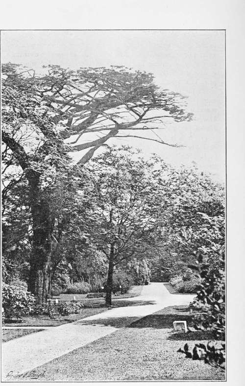

Gardening Under William And Mary. Part 6
Description
This section is from the book "A History Of Gardening In England", by Alicia Amherst. Also available from Amazon: A History Of Gardening In England.
Gardening Under William And Mary. Part 6
In his Diary on June 10th, 1658, Evelyn made the following entry:—"I went to see ye medical garden at Westminster well stored with plants under Morgan, a very skilful botanist." Hugh Morgan is twice mentioned by Johnson, in his edition of Gerard's Herbal, as "The Queen's Apothecary," and "a curious conserver of rare simples," and he notices a large specimen of the " Lote or Nettle " tree, growing in Morgan's garden, near " Coleman Street, in London." This Morgan was probably the same man whose garden at Westminster Evelyn visited, but how long he kept up this garden is uncertain. When a physic-garden in Westminster, presumably this one, was bought by the Apothecaries' Company, in June, 1676, it was in other hands, as the Company bought the lease from Mrs. Gape, with the liberty of moving the plants to Chelsea Garden.* The Physic Garden at Chelsea was founded in 1673,† and after a few years entirely superseded the one at Westminster. The lease of the land at Chelsea from Charles Cheyne (afterwards Lord Cheyne) was signed August 29th, 1673, for a term of sixty-one years,- the rent £5 per annum, and the following year a wall was built round the garden. The first gardener was Piggott, who was succeeded in 1677 by Richard Pratt. These gardeners received £30 a year, and their successor, John Watts, 1679, got £50. The garden was managed by a committee of twenty-one assistants, thirty liverymen, and twenty yeomanry. They built a greenhouse which cost them £138 in 1680. Two years after, Dr. Herman, of Levden, visited the garden and offered to exchange some plants. To effect this, Watts was sent over to Holland. In 1685 the expenses of the garden, besides Watts' salary, reached £130, so the Company, unable to carry on the garden at that rate, arranged to give Watts £100 a year, out of which he was to keep up the garden, and he was allowed to sell fruit and plants. The same sort of arrangement was afterwards made with his successor, Doody, a good botanist, and famous collector of native plants, chiefly cryptogams, who was given the post in 1693. In 1722, Sir Hans Sloane, having acquired land at Chelsea which included the garden, gave the site to the Apothecaries' Company, on condition that it was always to be a Physic Garden, and Philip Miller was made the curator. Another condition of Sir Hans Sloane's, was that the Company should present fifty new plants annually to the Royal Society (of which he was President) until they had given two thousand. They, however, continued the annual gift until 1773, and gave in all 2550 species.
* Faulkner's Chelsea, Vol, II., pp. 174-176.
† History of the Apothecary's Garden, By Henry Field, 1820.
APOTHECARIES GARDEN, CHELSEA (IN 1894).
Sir Hans Sloane had for many years taken a lively interest in the garden. In 1684 he wrote Ray an account of a visit which he paid to it.* " I was the other day at Chelsea, and find that the artifices used by Mr. Watts have been very effectual for the Preservation of his plants, insomuch that this severe winter has scarce killed any of his fine plants. One thing I much wonder to see Cedrus Montis Libani . . . should thrive so well, as without pot or green House, to be able to propagate itself by Layers this spring. Seeds sown last Autumn have as yet thriven very well." There were four cedars planted in 1683, and two were flourishing in 1820, and one remains in 1894. Before this visit to the garden, he must have paid many others, as he made most of his botanical studies there, and was encouraged and assisted by Ray. Sloane (born 1660) had been abroad and studied medicine at Montpelier, where a Botanical Garden had existed since 1598. Long years before he conveyed the land to the apothecaries, he was famous for his assiduous studies of Natural History. The first volume of his great work on Jamaica and the West Indies, was published in 1707. He was in Jamaica as Physician to the Duke of Albemarle, the Governor, who died there suddenly, and Sloane returned to England, having in fifteen months collected a large amount of curiosities, and no less than eight hundred species of plants. He lived at Chelsea all the latter part of his life, and died there in 1752. His fame as a Naturalist is scarcely less than as a Physician. The great Linnaeus as a young man came to England to see him in 1736. On every occasion he was the encourager and friend of gardeners, of which the following letter is an example :—
Ray's Philosophical Litters, 1718.
Sir Henry Goodricke to Sir Hans Sloane. Ribstan, near Boroughbi idge, in Yorkshire, 17 12/13.
Sir,
The civilitys I have received from you do incourage me to give the trouble of a letter, and knowing you to be one who loves to incourage curiosity makes me hope that the subject of my letter won't be so disagreable to you as to another. It is to desire of you that if among your rarities you have any number of seeds, nuts or kernells of foreign and rare trees especially those that are hardy I shall verily thankfully pay for 'em, my pleasure being to raise such things in hot beds and preserve 'em with care ; and I would not rob you of any but what you have so many as you may readily spare a part to one who will as readily supply you again when any accident happens to yours, which I believe yrs are more subject to near London than we are, here where I myself take the chief care of my curious trees. I have not yet been able to procure a tree of the true lotus (Zizyphus Lotus), nor the larch tree, both which Mr. Evelyn says grow well in our climate, and may be raised from seed ; these seeds and any other exotics I doubt not to raise, I mean trees, for smaller plants are too numerous for me to attend ; if you could procure me a small tree of each of those kinds I wd repay you with thanks, being Sr yr obliged and humble servant,
H. Goodricke.
There are three or four very fine larch trees in the grounds at Ribston now, which are probably the very ones sent in answer to this appeal. Sir Henry Goodricke was the introducer of the well-known Ribston pippin. He had three pippins sent him from Normandy about the year 1707, one of them grew up, and was the original Ribston Pippin tree; it was blown down in 1839, but a sucker from the root is now a fair-sized tree, and still bears occasional fruit.
Continue to:
- prev: Gardening Under William And Mary. Part 5
- Table of Contents
- next: Chapter XI. Dawn Of Landscape Gardening